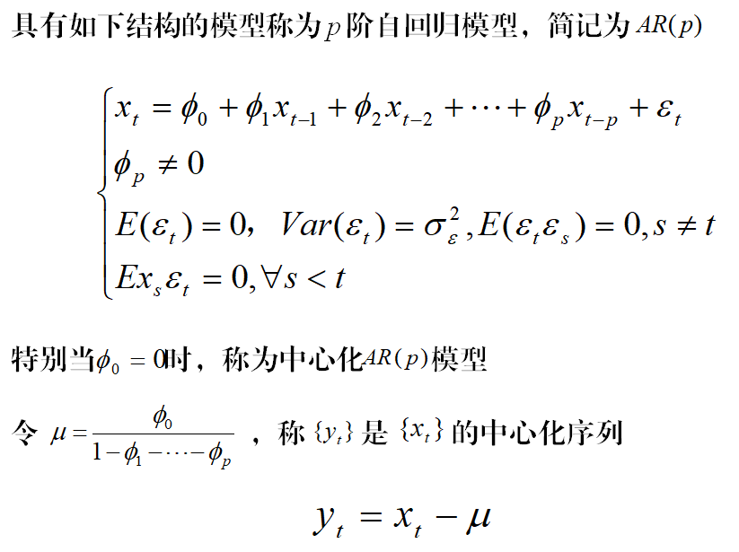
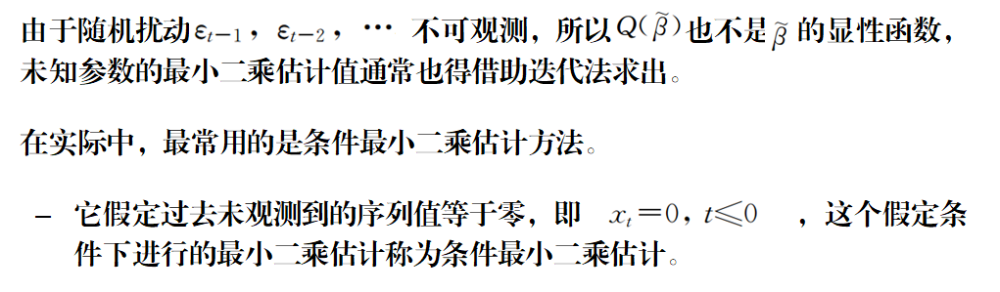
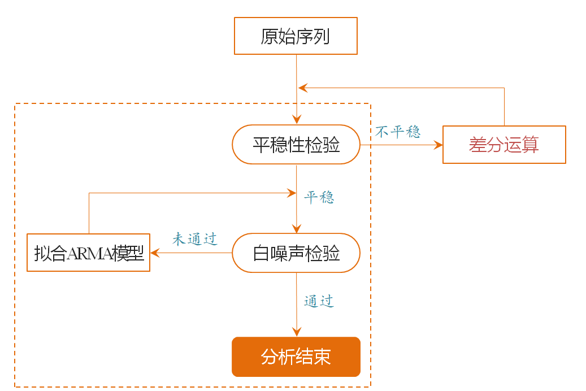

时间序列分析
时间序列的定义

时间序列的特征
- 观测值按照时间有序排列。
- 每一个时刻的取值或数据点的位置有一定的随机性。
- 前后观测值之间有一定的相关性。
- 从整体上看，往往呈现某种趋势性或周期性。
时间序列的分类
- 按所研究的对象的多少
- 一元时间序列
- 多元时间序列
- 按时间的连续性
- 离散时间序列
- 连续时间序列
- 按序列的统计特性分
- 平稳时间序列
- 非平稳时间序列
- 按序列的分布规律
- 高斯型(Gaussian)时间序列
- 非高斯型(non-Gaussian)时间序列
时间序列的建立
- 时间序列数据的采集
- 按照一定的时间间隔对所研究的系统响应进行记录和观察，我们称之为采样。
- 相应地把记录和观察时间间隔称为采样间隔。
- 选择合适的采样间隔是建立时间序列的关键。
- 理想的采样间隔就是既没有损失信息，也没有出现信息冗余。
- 离群点的检验与处理
- 离群点(Outlier)是指一个时间序列中，远离序列一般水平的极端大值和极端小值。
- 离群点可以通过将序列与平滑值的比较来检验。
- 离群点的分类
- 加性离群点：仅对序列产生一个即时效应。
- 革新离群点：标志着一个长期的外部干扰作用于系统的开始。
- 水平位移离群点：它的出现改变了系统结构，使序列均值发生水平位移。
- 暂时变更离群点：它的出现改变了系统结构，但影响会随着时间逐渐消失。
- 离群点的处理
- 直接进行剔除。
- 对数据模型进行修正处理分析。
- 缺损值(Missing value)的补足
- 依据系统运动轨迹或变化趋势，运用一定的方法对缺损值进行估计、推测，以补足缺损的数值。
时间序列的建模步骤

时间序列的描述
数据图法
指标法
核心指标反映系统的动态特征。
指标描述
增长量：时间序列中各时点与基期水平的差值。
逐期增长量：某时点与上一时点之差
累计增长量：某时点与某一个固定点之差
增长速度：增长量与基期之比
环比增长速度

发展速度：两个不同时间点的比值
环比：相邻两个时间点之比
定基比：与某一固定点之比
模型法
- 根据统计理论和数学方法，建立描述该序列的适应或最优统计模型，并进而进行预测和控制。
- 模型方法
- 以时间回归
- 移动平均
- 指数平滑
时间序列分析的目的
- 描述——认识系统的运行规律性。
- 建模——刻画系统结构和生成机制。
- 预测——预测系统未来行为。
- 控制——控制系统未来行为。
时间序列分析的方法
描述性时间序列分析：沿着时间的发展，记录下随机变量的数据，通过直观的数据比较或绘图观察，寻找序列中蕴含的发展规律。
统计时间序列分析
- 频域分析法
- 特点：非常有用的动态数据分析方法，但是由于分析方法复杂，结果抽象，有一定的使用局限性。
- 时域分析法
- 原理：事件的发展通常都具有一定的惯性，这种惯性用统计的语言来描述就是序列值之间存在着一定的相关关系，这种相关关系通常具有某种统计规律。
- 目的：寻找出序列值之间相关关系的统计规律，并拟合出适当的数学模型来描述这种规律，进而利用这个拟合模型预测序列未来的走势。
- 特点：理论基础扎实，操作步骤规范，分析结果易于解释，是时间序列分析的主流方法 。
- 基本步骤
- 考察观察值序列的特征
- 根据序列的特征选择适当的拟合模型
- 根据序列的观察数据确定模型的参数值
- 检验模型，优化模型
- 利用拟合好的模型来推断序列其它的统计性质或预测序列将来的发展
时间序列分析和其它统计科目的主要区别
取样：有时间关联的相依样本；独立样本。
目的：建立模型进行预报和控制；统计推断。
回归模型与时序模型：动态模型；静态模型。
时间序列的特征统计量
均值

方差
自协方差

延迟 k 自协方差
当k=0时，
估计值

自相关系数

延迟 k 自相关系数
估计值
时间序列的预处理
检验时间序列的平稳性
平稳时间序列
严平稳：所有的统计学性质都不随时间变化。往往只具有理论意义。
宽平稳：只要保证低阶矩平稳即可。弱平稳、二阶平稳。
严平稳和宽平稳
- 严平稳条件比宽平稳条件苛刻，通常情况下，严平稳（低阶矩存在）能推出宽平稳成立，而宽平稳序列不能反推严平稳成立。
- 不存在低阶矩的严平稳序列不满足宽平稳条件，例如服从柯西分布的严平稳序列就不是宽平稳序列（没有一、二阶矩）。
- 当序列服从多元正态分布时，宽平稳可以推出严平稳。
平稳时间序列的性质
常数均值

自协方差函数和自相关函数只依赖于时间的平移长度而与时间的起止点无关
平稳时间序列的意义
- 平稳的基本思想是：时间序列的行为并不随时间改变。
- 在平稳序列场合，序列的均值等于常数，这意味着原本含有可列多个随机变量的均值序列变成了只含有一个变量的常数序列。
- 原本每个随机变量的均值（方差，自相关系数）只能依靠唯一的一个样本观察值去估计，现在由于平稳性，每一个统计量都将拥有大量的样本观察值。
- 极大地减少了随机变量的个数，并增加了待估变量的样本容量。
- 极大地简化了时序分析的难度，同时也提高了对特征统计量的估计精度。
平稳性检验常用方法
图检验
- 时序图检验
- 平稳时间序列具有常数均值和方差。意味着平稳序列的时序图应该显示出该序列始终在一个常数值附近波动，而且波动的范围有界的特点
- 如果序列的时序图显示出该序列有明显的趋势性或周期性，那该序列通常就不是平稳序列。
- 自相关图检验
- 自相关图是一个平面二维坐标悬垂线图，横坐标表示延迟时期数，纵坐标表示自相关系数，悬垂线的长度表示自相关系数的大小。
- 平稳序列通常具有短期相关性。用自相关系数来描述就是随着延迟阶数k的增加
- 平稳序列的自相关系数 \(ρ_k\) 会很快地衰减向零。
- 非平稳序列的自相关系数 \(ρ_k\) 衰减向零的速度通常比较慢。
- 时序图检验
单位根检验
DF检验
DF检验是从最简单的一种情况着手进行构造的单位根检验方法。假设序列的确定性部分可以只由过去一期的历史数据描述，即序列可以表达为
显然该序列只有一个特征根，且特征根为
通过检验特征根是在单位圆内还是单位圆上（外）可以检验序列的平稳性。由于现实生活中绝大多数序列都是非平稳序列，所以单位根检验的原假设为序列非平稳，备择假设是序列平稳

DF检验的三种类型
类型一：无漂移项自回归结构
拒绝H0，表明零均值平稳序列
拒绝H0，表明零均值一阶自相关平稳序列
类型二：有漂移项自回归结构
拒绝H0，表明均值为φ0的平稳序列
拒绝H0，表明均值非0的一阶自相关平稳序列
类型三：带趋势回归结构
拒绝H0，表明带趋势平稳序列。
拒绝H0，表明带趋势的一阶自相关平稳序列
如果序列的结构考虑如上三种类型（6种子类型），统计量的P值均显著大于显著性水平，则可以判断，序列考虑如上6种结构之一提取确定性信息，随机性部分都不能实现平稳。
ADF检验
DF检验只适用于最简单的、确定性部分只由上一期历史数据描述的序列平稳性检验。为了使DF检验能适用于任意期确定性信息提取，人们对DF检验进行了一定的修正，得到了增广DF检验（augmented Dickey-Fuller），简记为ADF检验。
如果序列平稳，它必须满足所有非零特征根都在单位圆内。假如有一个单位根存在，不妨假设 λ1=1，则序列非平稳。把λ1=1代入特征方程，得到

这意味着，如果序列非平稳，存在特征根，那么序列回归系数之和恰好等于1。因而，对于序列的平稳性检验，可以通过检验它的回归系数之和的性质进行判断。

检验时间序列的纯随机性
纯随机序列
纯随机序列：如果序列满足如下两条性质，则称该序列为纯随机序列，也称为白噪声（White Noise）序列。
容易证明，白噪声序列一定是平稳序列，而且是最简单的平稳序列。
纯随机序列的性质
纯随机性：各序列值之间没有任何相关关系，即为 “没有记忆”的序列，意味着所有信息都被提出来了。
这是一种理论上才会出现的理想状况。实际上，由于观察值序列的有限性，纯随机序列的样本自相关系数不会绝对为零。
方差齐性：根据马尔可夫定理，只有方差齐性假定成立时，用最小二乘法得到的未知参数估计值才是准确的、有效的。
纯随机性检验的原理
Bartlett定理：如果一个时间序列是纯随机的，得到一个观察期数为 n 的观察值序列，那么该序列的延迟非零期的样本自相关系数将近似服从均值为零，方差为序列观察期数倒数的正态分布

假设
原假设：延迟期数小于或等于m期的序列值之间相互独立

备择假设：延迟期数小于或等于m期的序列值之间有相关性

检验统计量
Q统计量
LB统计量
为什么在本例中只检验了前6期和前12期延迟的 Q 统计量就直接判断该序列是白噪声序列
平稳序列通常具有短期相关性，如果序列值之间存在显著的相关关系，通常只存在于延迟时期比较短的序列值之间。 所以，如果一个平稳序列短期延迟的序列值之间都不存在显著的相关关系，通常长期延迟之间就更不会存在显著的相关关系了。假如一个平稳序列显示出显著的短期相关性, 那么该序列就一定不是白噪声序列，我们就可以对序列值之间存在的相关性进行分析。 假如此时考虑的延迟时期数太长，反而可能淹没了该序列的短期相关性。 因为平稳序列只要延迟时期足够长，自相关系数都会收敛于零。
时间序列的平稳化
差分
d 阶差分
d 步差分（包括季节差分）

差分方式的选择
- 对于线性趋势的序列，1阶差分可以实现趋势平稳。
- 对于曲线趋势的序列，1~3阶差分可以实现趋势平稳。
- 对于含有固定周期趋势的序列，以周期长度为差分步数，通常可以提取周期趋势。
- 方差不齐的非线性趋势的序列，可以先变换，再差分。
过差分
一、二阶差分均能使序列达到平稳，但二阶差分序列的方差大于一阶差分的方差。方差越大估计精度就越低。可见，差分的阶数并非越高越好。
差分的目的是使序列平稳。为防止过差分，通常的做法是每次差分后进行一次平稳性检验，通过平稳性检验，若差分后已经是平稳序列，则停止差分运算。
变量变换

λ=1：没有进行实质上的转换
λ=1/2：平方根转换+线性转换
λ=1/3：立方根转换+线性转换
λ=0：log转换
λ=-1：与负倒数转换类似
box-cox变换的目标
- 变换后，可以一定程度上减小不可观测的误差和预测变量的相关性。主要操作是对因变量转换，使得变换后的因变量于回归自变量具有线性相依关系，误差也服从正态分布，误差各分量是等方差且相互独立。
- 用这个变换来使得因变量获得一些性质，比如在时间序列分析中的平稳性，或者使得因变量分布为正态分布。
因素分解理论
Wold分解定理
对于任意一个离散平稳时间序列 \(\{x_t\}\) ，它都可以分解为两个不相关的平稳序列之和，确定性部分和随机性部分，
因此，平稳序列 \(\{x_t\}\) 可以表示为自回归移动平均模型（auto regression moving average, ARMA）

Cramer分解定理
确定性因素分解

常见确定性趋势
线性上升、下降
指数上升、下降（对序列取对数后，可以直线化。序列数据如果有0或负数不适用。）
周期趋势（可以用三角函数表示。）
长期趋势+周期趋势
多项式趋势
延迟算子

延迟算子的性质
延迟算子和差分的关系

AR模型

用延迟算子表达AR模型
AR模型的统计性质
自相关系数

AR模型的平稳性判别
判别原因
- 要拟合一个平稳序列的发展，用来拟合的模型显然也应该是平稳的。
- AR模型是常用的平稳序列的拟合模型之一，但并非所有的 AR 模型都是平稳的。
判别方法
特征根判别法
平稳域判别法
AR（1）

AR（2）

平稳AR模型的统计性质
均数
平稳序列均值为常数
方差

AR（1）
AR（p）
协方差
相关系数
自相关系数
偏自相关系数
偏自相关系数的p阶截尾性

MA模型
用延迟算子表达MA模型

MA模型的统计性质

自相关系数
偏自相关系数
MA模型的偏自相关系数拖尾

MA模型的可逆性
不同的MA模型，可能具有完全相同的自相关系数的现象。产生这种现象的原因：自相关系数有可能不唯一。这种自相关系数的不唯一性，会给我们将来的工作增加麻烦。为了保证一个给定的自相关函数能够对应唯一的模型，我们就要给模型增加约束条件。称为模型的可逆性条件。
可逆MA模型定义：若一个MA模型能够表示成为收敛的AR模型形式，那么该MA模型称为可逆MA模型。
可逆概念的重要性：一个自相关系数列唯一对应一个可逆MA模型。
MA模型的可逆条件

ARMA模型
ARMA模型平稳条件与可逆条件

ARMA模型的统计性质

ARMA模型的相关性特征
| 模型 | 自相关系数 | 偏自相关系数 |
|---|---|---|
| AR（p） | 拖尾 | p阶截尾 |
| MA（q） | q阶截尾 | 拖尾 |
| ARMA（p，q） | 拖尾 | 拖尾 |
ARMA模型的建模步骤

ARMA模型判断平稳性的方法
单位根检验
计算样本相关系数（自相关、偏自相关）
ARMA模型的参数估计方法
常用估计方法
- 矩估计
- 极大似然估计
- 最小二乘估计
矩估计

优点
- 估计思想简单直观
- 不需要假设总体分布
- 计算量小（低阶模型场合）
缺点
- 信息浪费严重，只用到了p+q个样本自相关系数信息，其他信息都被忽略
- 估计精度差
通常矩估计方法被用作极大似然估计和最小二乘估计迭代计算的初始值
极大似然估计

优点
- 极大似然估计充分应用了每一个观察值所提供的信息，因而它的估计精度高
- 同时还具有估计的一致性、渐近正态性和渐近有效性等许多优良的统计性质
缺点
- 需要假定总体分布
最小二乘估计

优点
- 原理简单
- 方法普适
- 估计精度高
ARMA模型的显著性检验
目的：检验拟合模型的有效性（对相关信息的提取是否充分）
检验对象：残差序列
判定原则：一个好的拟合模型应该能够提取观察值序列中几乎所有的样本相关信息，即残差序列应该为白噪声序列。反之，如果残差序列为非白噪声序列，那就意味着残差序列中还残留着相关信息未被提取，这就说明拟合模型不够有效。
ARIMA模型
ARIMA模型中的I（ integrated ）的意思

ARIMA(0,1,0)就是随机漫步（random walk）模型，又称醉汉模型
ARIMA模型的性质
- 非平稳性
- 异质方差性（方差非齐性）
ARIMA模型的建模流程

SARIMA模型
SARIMA模型的建模流程

移动平均
简单中心移动平均

优点：
- 能够提取低阶趋势（线性、二项）
- 能够实现拟合方差最小
- 按周期进行移动平均，能够消除季节性
缺点：
- 尾部少掉 s/2 的预测值
- s 的确定
Henderson加权移动平均
Musgrave非对称移动平均
指数平滑
多元自回归模型
互相关函数
互协方差

互相关系数
Granger因果检验
考察序列 {\(x_t\)} 是否为序列 {\(y_t\)} 的原因。如果序列 {\(x_t\)} 是序列 {\(y_t\)} 的原因，则 {\(x_t\)} 将有助于预测 {\(y_t\)} ，而 {\(y_t\)} 不能有助于预测 {\(x_t\)} 。
单整
序列 {\(x_t\)} 经过 d 阶差分达到平稳，称 {\(x_t\)} 为 d 阶单整的(integration)。
协整

EG 检验是 DF 检验的扩展(augmented Dickey–Fuller test for unit roots).
ARIMAX模型

VAR模型
多元自回归/向量自回归模型（Vector auto-regression model）
向量自回归模型把系统中每一个内生变量作为系统中所有内生变量的滞后值的函数来构造模型，从而将单变量自回归模型推广到由多元时间序列变量组成的“向量”自回归模型。简而言之，VAR模型就是把所有变量看成一个向量，然后做其对其滞后项的回归。
案例
含有趋势性序列的建模
含有干扰点序列的建模
含有转折点序列的建模
含有缺失数据序列的建模
含有季节性序列的建模
本作品采用 知识共享署名-非商业性使用-禁止演绎 4.0 国际许可协议 (CC BY-NC-ND 4.0) 进行许可。